My work focuses on helping people understand where answers come from, what has changed, and what needs their attention before they act. 13 years in design. The last 3 focused on AI.
I design contract software at Sirion, helping lawyers work with AI and make informed decisions.
My work focuses on helping people understand where answers come from, what has changed, and what needs their attention before they act. 13 years in design. The last 3 focused on AI.
01Finding the contracts
Search.
A policy changes, and someone has to find every contract that no longer meets it.
Playing
Sirion · Live
In most AI search, a wrong answer costs a retry. In contracts, it costs a breach nobody was told about in time.
So it asks how to judge before it reads, reads each contract family whole, and when two documents disagree it says so instead of picking one.
To know what a clause says today, someone had to find every relevant contract document and work out what each one changed.
Playing
Sirion · Prototype
One paragraph shows what the clause means today. Every change stays marked in the text with its date and the document it came from, so people can trace each part back, even when two parts of one sentence changed years apart.
One click opens the signed document at the exact paragraph that made the change. Reading the original wording is what lets people trust what the AI put together.
Lawyers check every AI edit. The one they worry about is the clause the edit didn’t touch.
Playing
Sirion · Concept
Change one clause and something three pages away can stop matching it: a definition, a cross-reference, a notice period that hangs off a date.
Here the redline lands in the text, says where its wording came from, and marks the other clause it just put out of step, with the fix already written.
Playing on a loop. The same card, asked to say more.
Own work · 2023–26
As AI agents become capable of finding and connecting information on their own, a new question interests me: how do they know what deserves our attention, and when?
What does this clause say today—and when did it change?
To answer that, lawyers often have to read the original contract alongside its amendments and piece the changes together. I wanted to bring the current wording and its history into one view, while keeping the source close enough to verify.
A paragraph can have more than one history
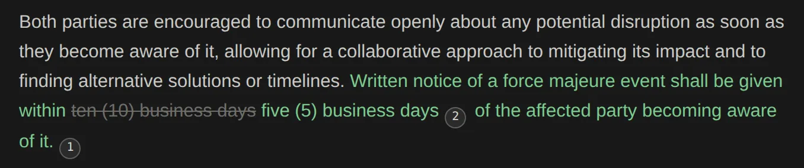
A sentence might be added in one amendment, then changed in another. Giving the whole paragraph one citation would hide that distinction.
I attached markers to the specific parts that changed. In this example, the notice requirement was added in 2020. The deadline changed from ten days to five in 2022. Each marker leads to its own date and source document.
Show the change, then let people check it
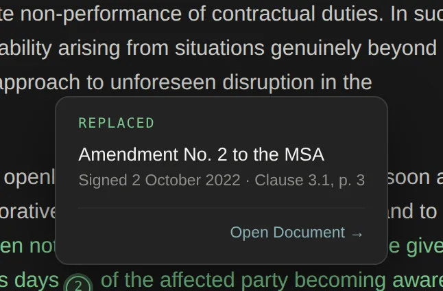
The crossed-out and green words show the difference directly in the clause. Selecting a marker opens a card with the earlier wording, the amendment details, and the source passage.
I kept the card focused on what helps someone verify the change, without repeating what the paragraph already shows. From there, they can open the signed document.
Make time visible
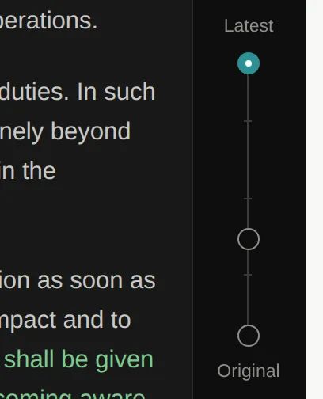
The timeline connects the original clause to its later versions. I spaced the points by date, so the gaps show how far apart the changes happened.
Keep the view steady
I initially used hover to switch versions. But moving the pointer made the text and timeline shift unexpectedly.
I changed it to a click. People can choose a version and read it without the view changing underneath them.
Let each element do its job
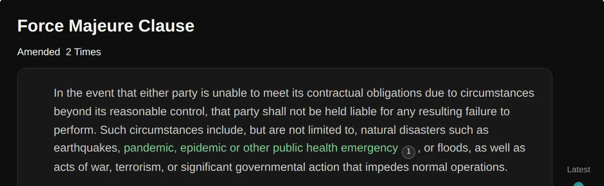
I kept the header to “Amended 2 times.”
The highlighted words show what changed. The markers and source cards explain where it came from. The header only needs to tell people how many times the clause was amended.
What I would work on next
This becomes harder to read when a clause has many amendments. Too much crossed-out text starts competing with the wording someone came to understand.
The next step is to keep the current clause clear, with older changes available to expand when needed.
Own design, concept stage. The suggestions, the contracts they cite and the links between clauses are scripted sample data.
Lawyers check every AI edit. The edit they worry about is not the one they can see. It is the definition three pages up that no longer matches, or the cross-reference that now points at the wrong clause.
The edit lands where the words are
No side panel. Select a paragraph, say what should change, and the redline appears in the text, the way tracked changes already do.
Every change keeps its reason
Hover the green text and it says who changed it, when, and what was asked. Word shows that for a person. This shows it for the agent.
A suggestion says where it came from
Each one names the signed contract its wording came from, and where it sits on the playbook: standard, fallback, or off-playbook. Wording that has already survived a negotiation is easier to trust than wording written a second ago.
An edit shows what else it reaches
When a change leaves another clause out of step, both are marked. One click opens the other clause with the fix already written.
Not solved yet
Here the links between clauses are scripted. Finding them for real needs the contract’s definitions and cross-references mapped first.
The AI had found the values. Reviewers still had to find the evidence.
A contract could have 128 extracted fields, and a lawyer was still accountable for checking every one. A confidence score and a page number gave them somewhere to start, but left much of the verification work to them.
I owned the review redesign from research synthesis through interaction design and handover. The question I kept returning to was: how much work does someone have to do before they can accept an answer?
Keep the answer close to its source
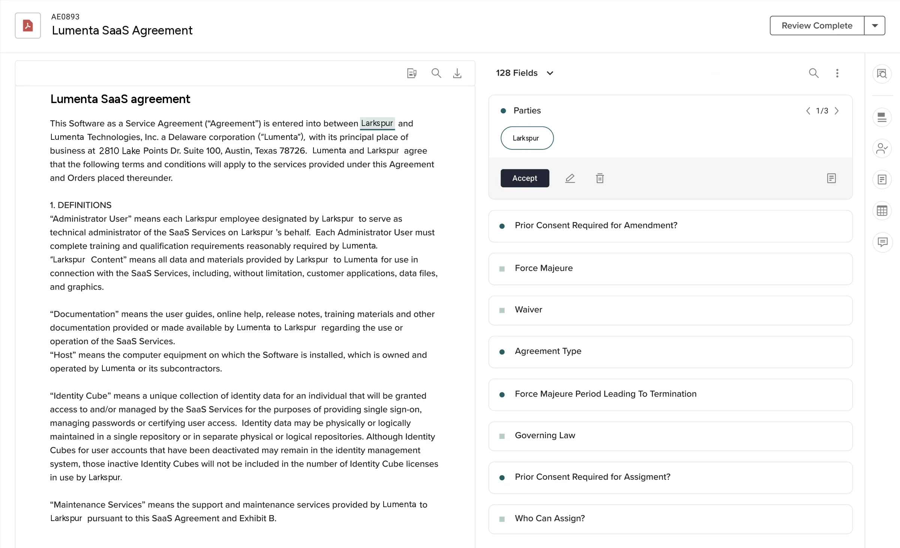
I started with how people already review documents: they mark the words they need to check.
That became the rule for the interface. Each extracted value should stay connected to the passage it came from. Reviewers could inspect the answer while keeping the contract in view.
Design for a whole contract
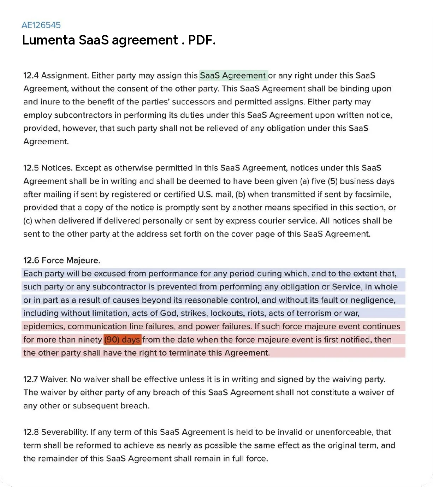
1 · Inline highlights
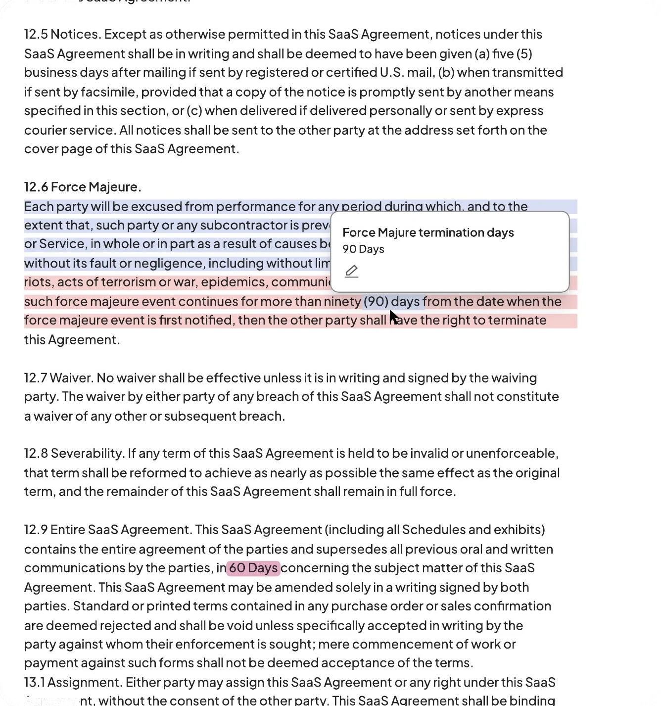
2 · Hover cards
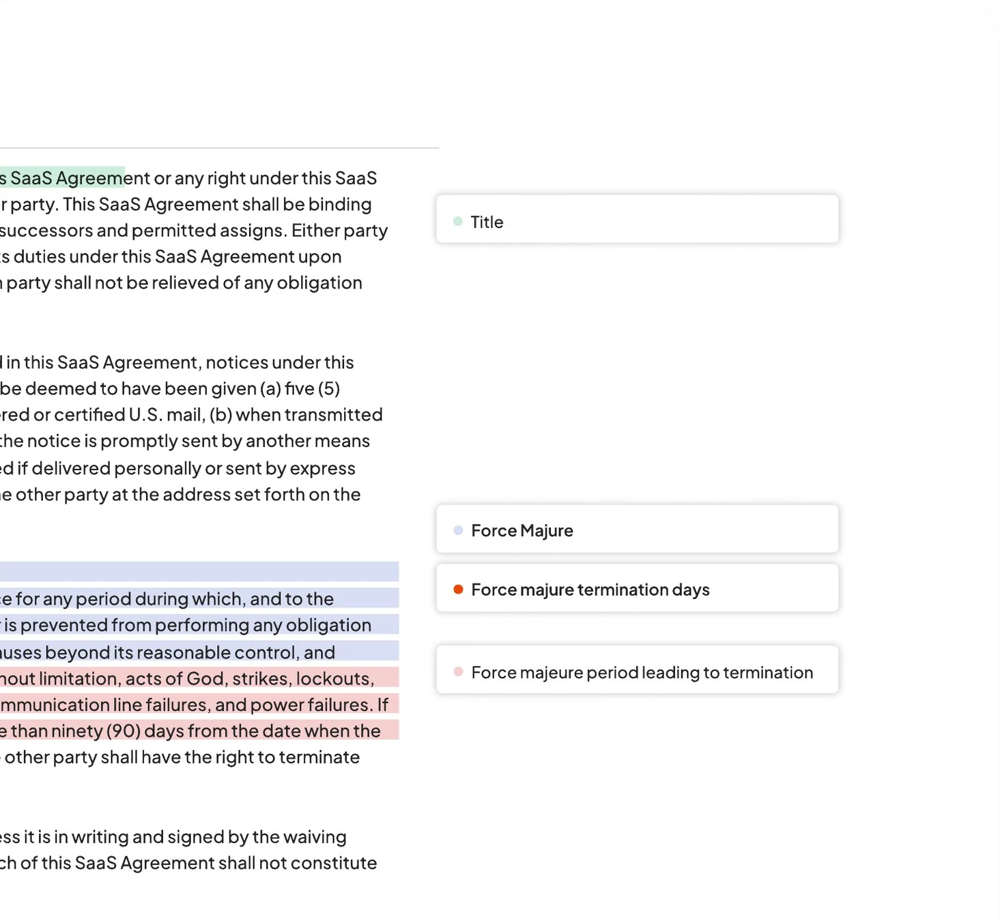
3 · Margin labels
My first version used inline highlights. They made values easy to spot, but hid the detail needed to judge them.
Hover cards brought that detail closer. Checking one value became easier, but checking a hundred still meant a hundred small interruptions.
I moved to visible labels in the document margin, aligned with their source passages. The reviewer could follow an order through the contract instead of repeatedly searching for the next item.
Give each decision a moment
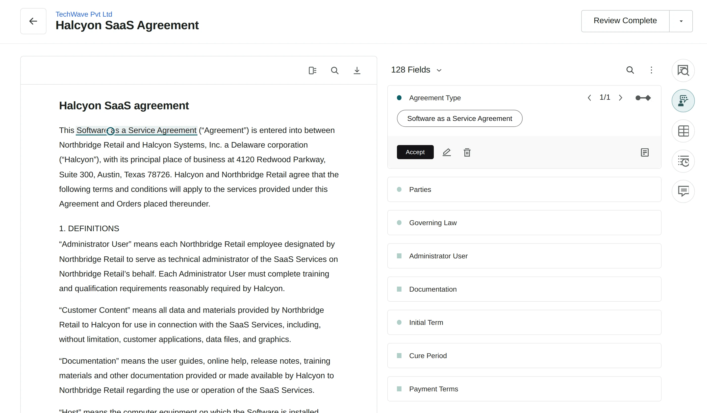
After someone accepts a value, the confirmation appears first. Then the next field opens, and the document moves to its source passage.
That small pause lets people see that their decision registered before the view changes. The interface handles the navigation; the reviewer keeps control of the judgment.
Give people something they can question
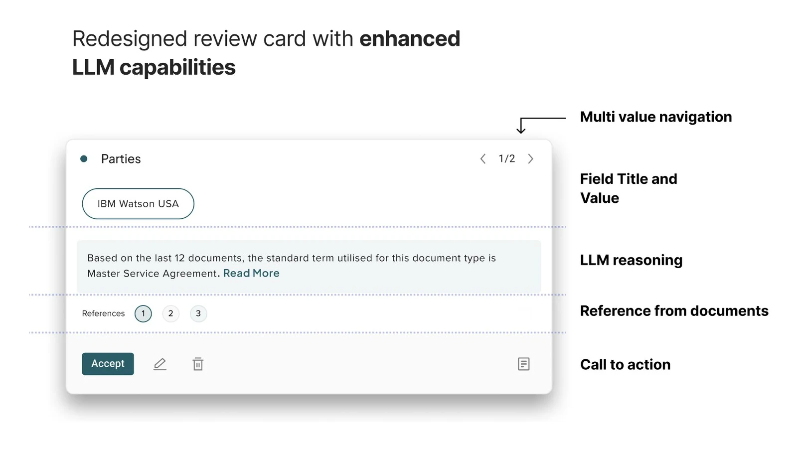
I removed the confidence percentage. It told reviewers how sure the model was, but gave them little to examine.
The card instead shows the model’s reasoning and references that open the relevant passage. Someone can check the source, disagree with the explanation, or correct the value.
Keep corrections connected too
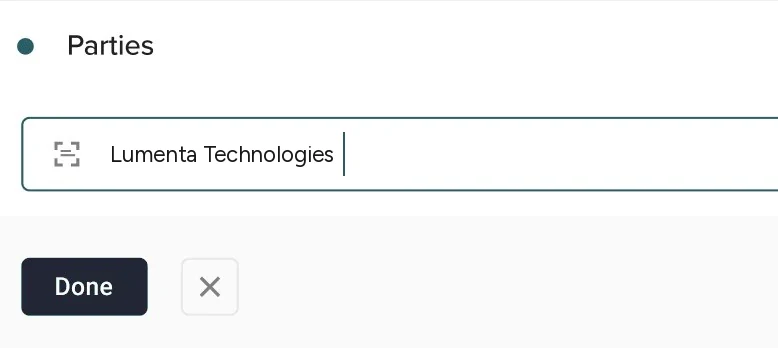
If the answer is wrong, reviewers can edit it in place. If it came from the wrong passage, they can select the right one and re-tag it.
The corrected answer keeps its evidence.
What changed after shipping
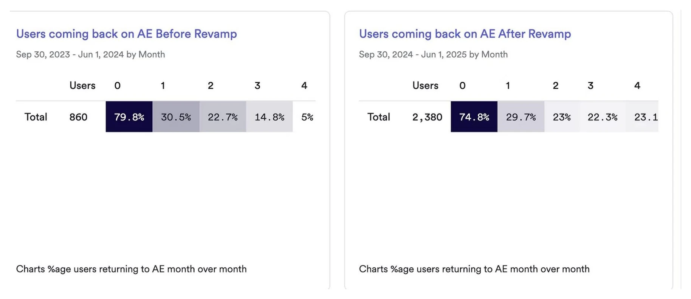
Month-four retention rose from 5% to 23%. More people were still returning to the module after the initial use.
The customer mix and AI model also changed during that period, so I would not attribute the whole increase to the redesign. The result is encouraging; the full case explains the comparison and its limits.
Finding a convincing answer is only part of the job. What happens if a contract is missing from it?
A policy changes. Suppliers now need to report a data breach within 24 hours. Someone has to find the contracts that fall short.
An incorrect result could send a lawyer towards an agreement that needs no change. A missed result is quieter: an agreement that needs attention never reaches them.
Testing changed what I designed for. A convincing answer wasn’t enough: people needed to know how far to trust it, and where each finding came from. So before presenting a list, the interface makes the interpretation visible, shows what was reviewed, and holds back where the documents do not support a settled answer.
Agree on what counts as a miss
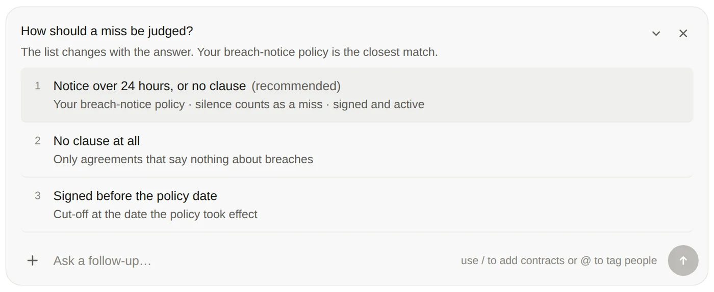
“Which contracts don’t meet our policy?” sounds clear until you try to judge each agreement.
Does a miss mean a notice period longer than 24 hours? Does having no breach-notice clause count too? Or is the person asking about contracts signed before the policy changed?
Those interpretations produce different lists.
The search proposes a reading of the request and lets the reviewer confirm or change it. I accepted an extra step here because silently choosing the wrong criterion could make every result that follows misleading.
Read the relationship around the clause
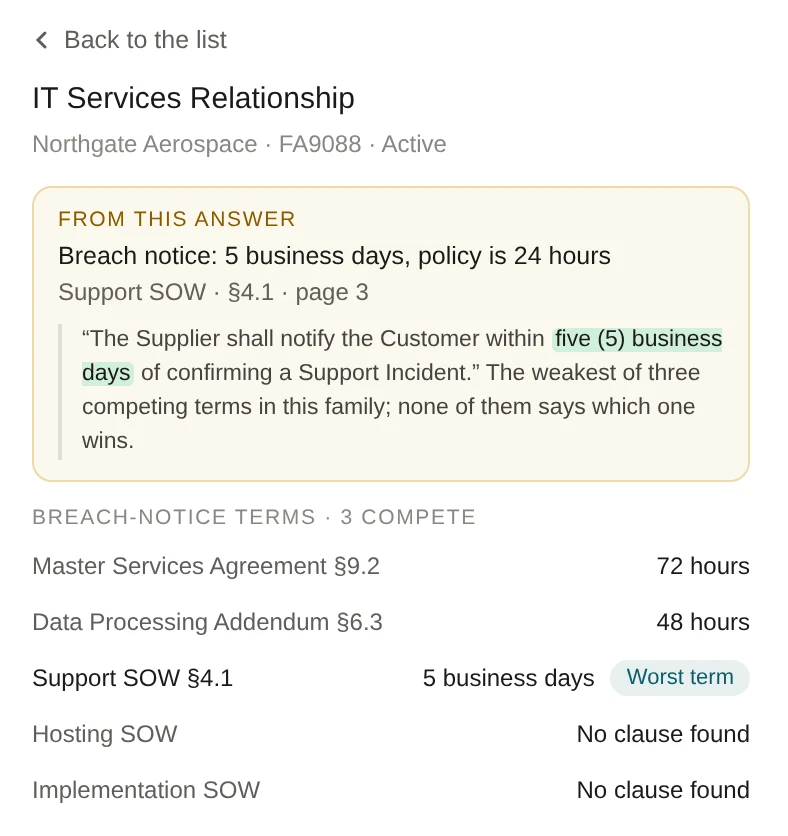
Testing also showed how much the history of a clause matters: which document set the wording, and what changed it later.
The relevant wording may sit in a master agreement, a statement of work, or a later amendment.
A passage can be quoted correctly and still give an incomplete picture of the agreement.
So the search reviews the related documents together and checks which wording applies before reporting a position. The result represents a contract family, with its supporting documents available to inspect.
Show what was checked
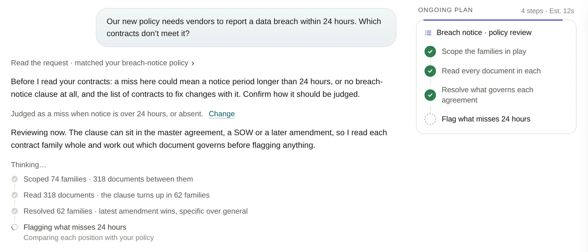
Each step shows what it covered, with the plan beside it.
A broader review takes time. I wanted that wait to explain something useful.
The interface shows the families in scope, the documents reviewed, and the step of checking which terms govern. This gives the reviewer a way to question the coverage as well as the answer.
A list is easier to assess when you can see what it was drawn from.
Keep different findings different
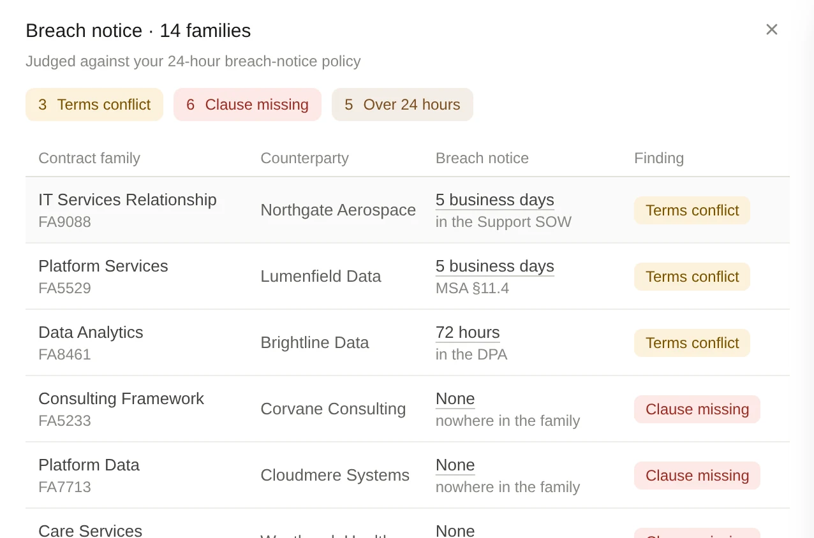
A deadline over 24 hours, an absent clause, and conflicting terms need different follow-up.
I kept those findings separate rather than reducing everything to “doesn’t comply.” The list tells the reviewer why each family needs attention.
Leave disagreement visible
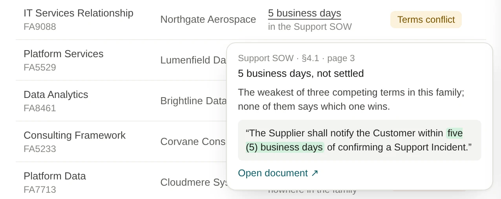
In the example, three documents contain three different notice periods. The search shows the passages together and says the position is not settled.
All three exceed 24 hours, so the family can still be flagged against that criterion. Deciding which document needs changing first remains a lawyer’s call.
The system can make a supported finding without pretending it has resolved every question around it.
Where it stands
AskSirion is live in Sirion today. Reading a contract family as a whole, with its context and what its terms mean, is the part now in development.
Coverage is part of the answer. In CLM, hiding a gap is worse than showing one. If some documents could not be read, the search says so. “No clause found” should never quietly stand in for “we could not finish reviewing the documents.”
The same information can mean something very different depending on when it reaches you.
Imagine your wife calling at 2 in the afternoon. You might answer or call back later.
Now imagine the same call at 3 in the morning. You would probably pick up immediately, perhaps expecting something serious.
Same person. Same phone call. But the situation changes what it means to you.
Not because the phone knows something different. Because you do.
You know who is calling, her routine, the hour, what has been happening in her life. You don’t weigh these one by one. You read them together. And you might still be wrong: it could be an accidental call.
I started wondering whether AI agents need a similar sense of when to speak and when to stay quiet.
Where this question came from
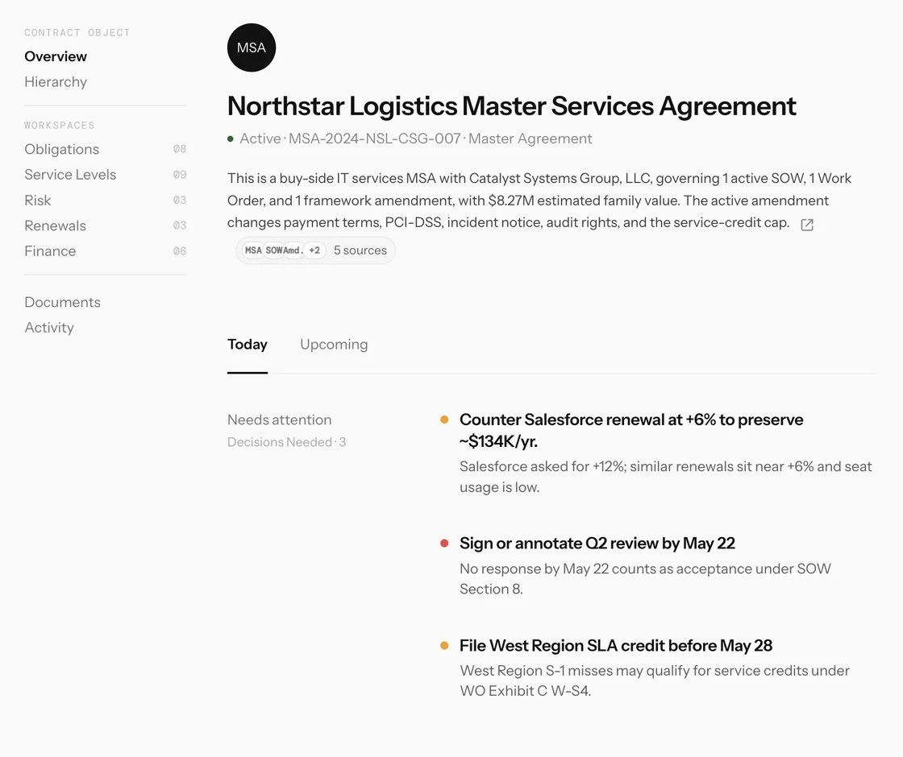
While exploring an AI-first contract experience, I moved away from presenting contract information as pages, fields, and documents.
The idea was to let the agent do the reading, connect information across agreements and amendments, and bring forward what someone needs to know or act on.
By morning, an agent might have reached 200 conclusions. Show all of them, and the work has only moved from reading contracts to reading AI.
The software has become smarter. The experience hasn’t necessarily become easier.
Showing the five most important findings seems like an obvious answer. But importance alone doesn’t tell us whether someone needs to see something now.
An agent can know something important without needing to tell us immediately.
Knowing something isn’t the same as knowing when it matters
Consider a contract whose payment terms have changed through amendments.
At 9 AM, the agent understands the governing payment term as Net 60.
At 11 AM, a newly uploaded amendment reveals that the applicable term is actually Net 45.
The agent has discovered something important. But what should it do with that discovery?
Situation A The next relevant payment is three months away.
The agent can update its understanding, preserve the evidence, and make the change available without interrupting anyone.
Situation B Finance is about to process a payment at noon using the earlier interpretation.
Now the same discovery could affect an immediate decision. The agent may need to bring it to someone’s attention before they act.
The finding hasn’t changed.
What changed is what someone was about to do with it.
The agent needs to understand not only what it has discovered, but what else is happening, who might be affected, and what could happen if the information is missed.
The context that changes judgment
Think of two contracts approaching renewal.
One expires in two days. Another in ten.
Looking only at dates, the first seems more urgent.
But the first vendor may already be scheduled for offboarding. The second may be strategically important, with negotiations underway and a decision needed much earlier.
An agent could read every document correctly, calculate every deadline, and still bring the wrong one to the top. Not because its calculations were wrong. Because its understanding of the situation was incomplete.
Timing, consequences, relationships, ownership, ongoing activity, and the possibility of reversing a decision can all change what deserves attention.
These factors don’t operate independently. Their meaning often comes from how they relate to one another.
This is the part of Sensitivity I’m most interested in: how an agent interprets a situation before deciding what a person needs to know.
But an agent won’t know everything
There is an important limitation.
A renewal decision might have been made during a phone call. A supplier may be getting replaced after an offline discussion. Someone may already be handling an issue without recording their progress.
The agent cannot judge using information it doesn’t have. The limitation isn’t always intelligence. Sometimes it’s missing information.
That means its interpretation can be reasonable based on available evidence and still be wrong for the person receiving it.
I don’t think the answer is to expect perfect judgment.
The agent should make its reasoning understandable, distinguish what it knows from what it has inferred, and allow someone to correct its understanding.
A person saying “We’re already handling this” or “This vendor is being offboarded” adds context the agent was missing.
But not every dismissal is a correction. Someone may wave away something important simply because they’re busy. Ignoring, acknowledging, handing it to someone else and correcting the agent are different intentions, and the interface should make each one easy to say.
Good judgment may not always mean acting independently. Sometimes it means knowing when human understanding is needed.
From judgment to interaction
My original Sensitivity exploration proposed five levels of attention:
Nothing → Hint → Reveal → Emphasise → Interrupt
These describe different ways information can enter an interface, from remaining in the background to actively demanding attention.
But the deeper question comes before choosing a level.
What does the agent understand about the current situation? What are the consequences of missing something? How reliable is its interpretation? Is a person about to make a decision? Has someone already taken responsibility?
The answers may influence whether the agent stays quiet, offers a hint, presents evidence, asks for confirmation, or interrupts.
The attention levels are only the visible expression of that judgment.
The real challenge is deciding which response the situation deserves.
And there is a second pull. The more work the agent does out of sight, the more a person needs to check before trusting it. Why +6%? Where did $134K come from? AI compresses the work. Trust sometimes requires unpacking it. That is what the UI samples are for.
Where this thinking stands
I don’t see Sensitivity as a finished algorithm or a proven model of human judgment.
Existing work in context-aware computing, intelligent notifications, and human-AI interaction already explores parts of this problem.
What interests me is how these ideas come together as AI agents gain the ability to discover information, interpret changes, and act across complex enterprise workflows.
I want to understand which contextual signals matter, where automated judgment differs from human judgment, and how interfaces should behave when the agent’s understanding is incomplete.
The next step is to explore these questions through realistic contract scenarios and compare the agent’s proposed behavior with the decisions experienced users would make.
Maybe the future of AI interaction design isn’t only about what the machine can tell us. It’s about whether it understands enough of our situation to know when telling us would actually help.
That’s the question I’m exploring through Sensitivity.